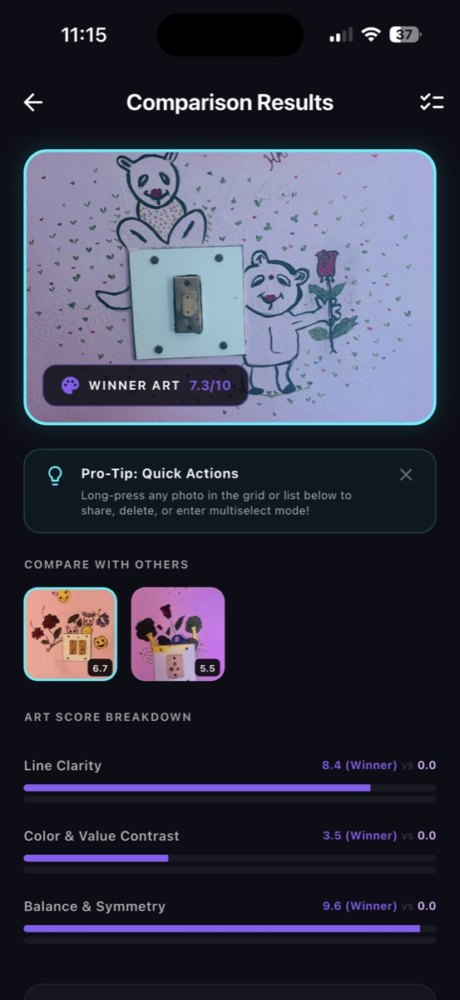
Artwork winnerScores a photographed drawing and compares it against alternatives.
Torn between similar selfies, or checking if a document scan is clear? SnapScore uses local AI to rank your photos, score your drawings, and preview social profile crops—straight from your native Photos share sheet.
Photos stay on device
Scores become next steps
Mockups show real context
SnapScore turns the common anxiety of “which photo should I use?” into a fast, visual, private decision. It supports artists, students, professionals, and everyday creators with scores, comparisons, diagnosis, and platform previews that are easy to understand at a glance.
SnapScore is not just a score screen. It explains visual quality, compares similar shots, and previews where each image will actually be used.
Grades line clarity, contrast, balance, and capture quality so artists can photograph sketches and paintings with more confidence.
Shows how portraits and memories look inside LinkedIn, Slack, WhatsApp, Instagram, Facebook, covers, and story-style layouts.
Compares similar images, highlights the best option, and gives practical diagnosis instead of leaving users to guess from a gallery grid.
How SnapScore turns complex on-device computer vision into simple daily workflows for students, artists, and creators.
Scenario: You're a student capturing chalkboard notes or handwritten textbook formulas. Are they clear enough for studying later?
🔍 Text Readability: Analyzes edge clarity and OCR legibility of text characters. 🚨 Highlight Unreadable: Flags blurry, out-of-focus, or skewed document sections. 🗑️ Delete Bad Photos: Instantly wipe low-scoring temp images to save mobile space.
Scenario: You're an artist capturing physical charcoal sketches, watercolor paintings, or cartoons. Is the photo high-quality?
✏️ Line & Stroke Clarity: Checks edge gradients using Laplacian filters. 🌓 Value & Contrast Range: Evaluates shading depth and highlight definition. ⚖️ Symmetry & Balance: Scans regional density of stroke structures between left/right halves.
Scenario: Back from a trip with 15 similar selfies and can't choose which one to post on social media?
🏆 Which is Best: Compares up to 30 photos side-by-side and designates a winner. 👤 Social Suitability: Checks facial rotation, smile indicators, and lighting. 📱 Share Sheet integration: Launch comparisons directly from your mobile gallery.
Scenario: Want to compare detail capture between an iPhone vs. Samsung, or different lens filters?
📱 Camera Benchmarks: Computes objective, mathematical clarity and contrast stats. 🔍 Micro-detail comparison: Runs edge definition variances to see pixel-level definitions. ⚖️ Fair Comparison: Renders scoring meters for lighting, focus, and noise profiles.
Simulate SnapScore's on-device analysis pipeline. Select a preset image below to check its scores, classification, and real-time AI suggestions.
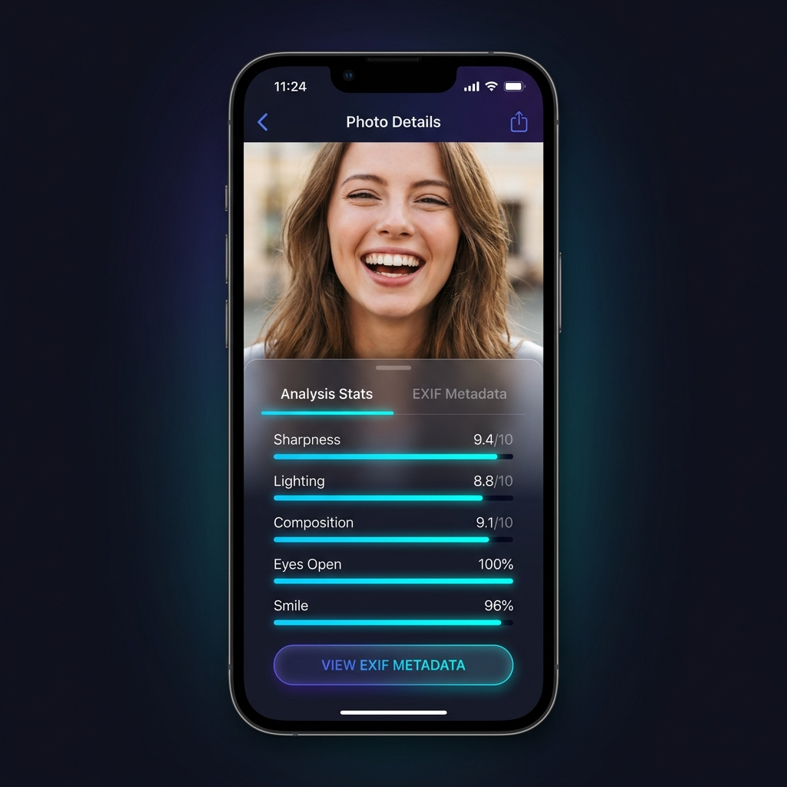
Monochrome edge illustration
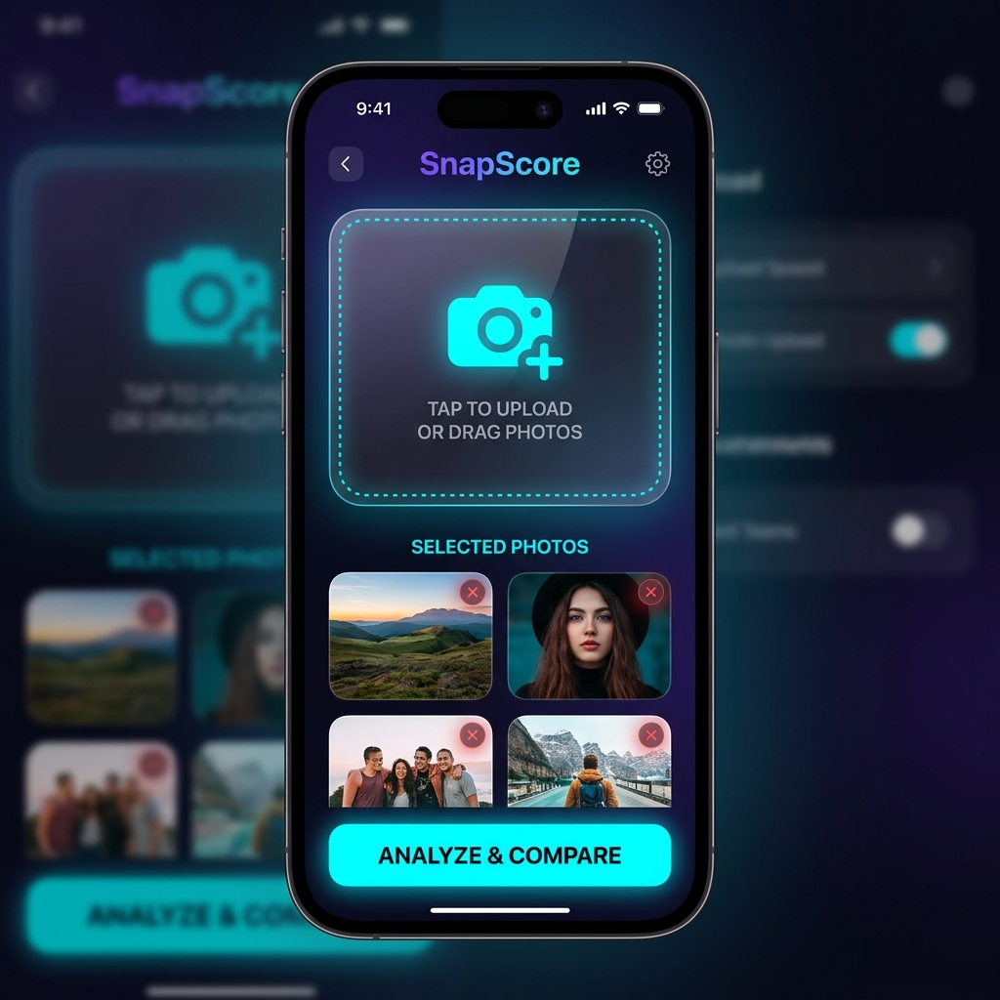
Blurry lighting & skewed frame
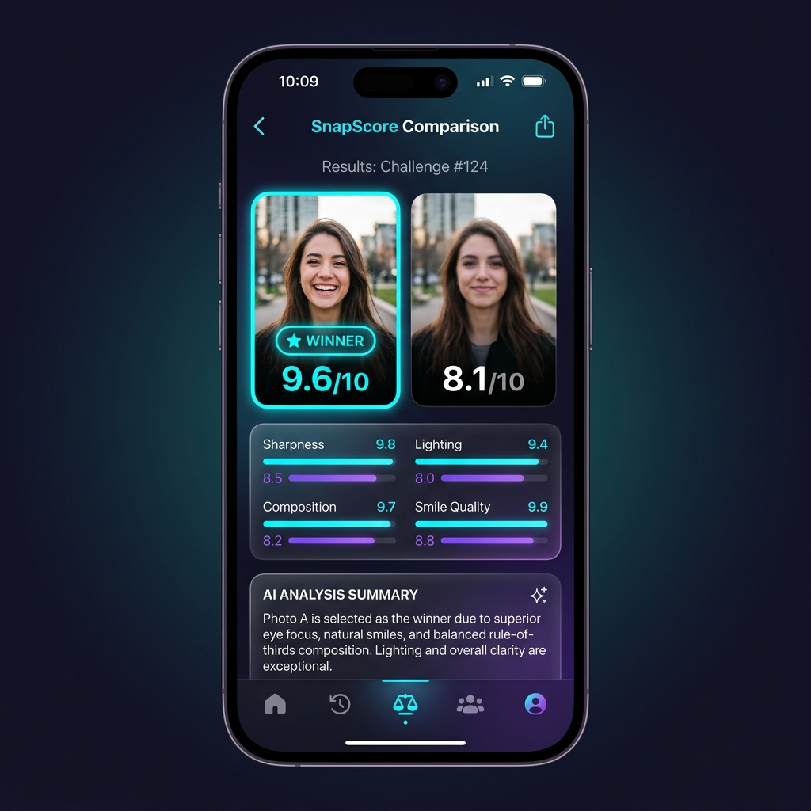
Centered headshot with smile
Excellent stroke definition! Shading contrast is good. Center framing is well balanced. Lay the capture sheet completely flat next time to avoid slight perspective warping.
Real iPhone screenshots showing the complete flow: compare photos, inspect details, understand quality, and preview the same image across social destinations.
SnapScore pairs visual polish with utility: winner badges, score breakdowns, AI diagnosis, and contextual social mockups make the recommendation feel explainable.

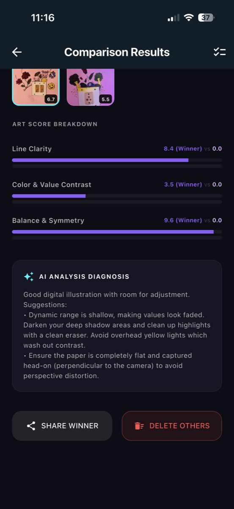
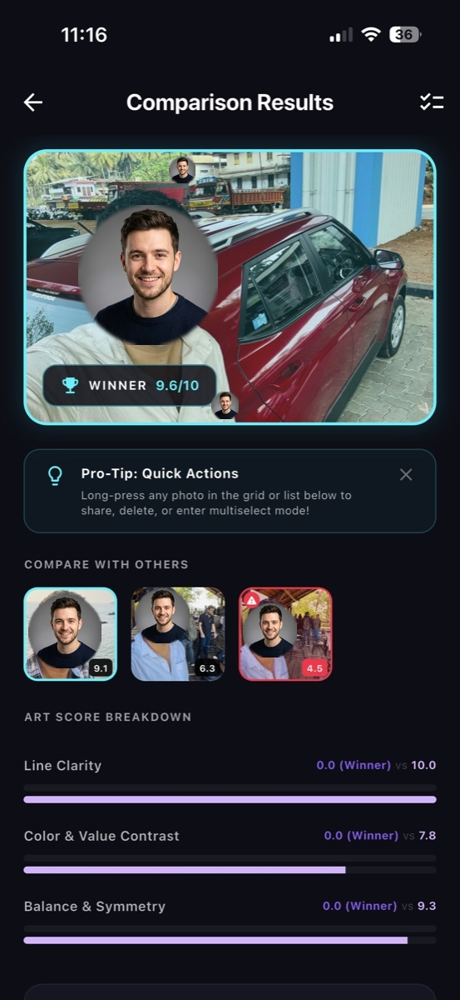
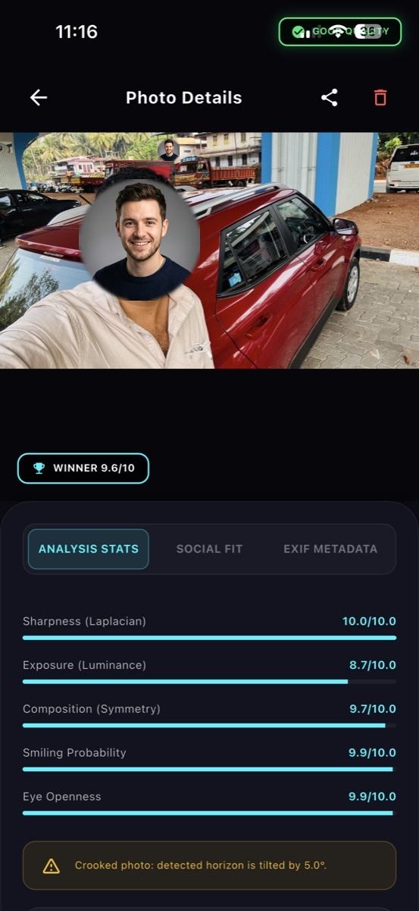
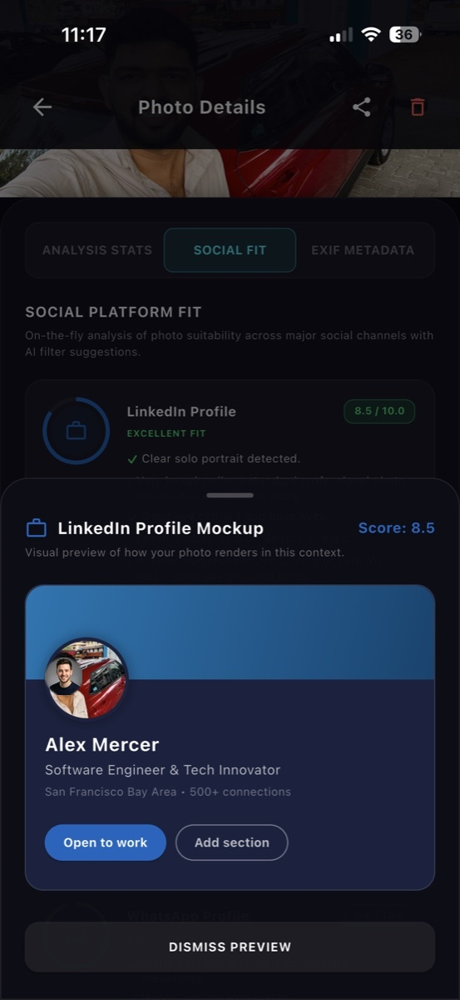
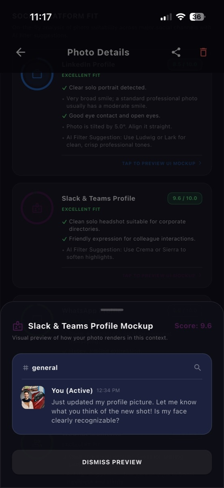
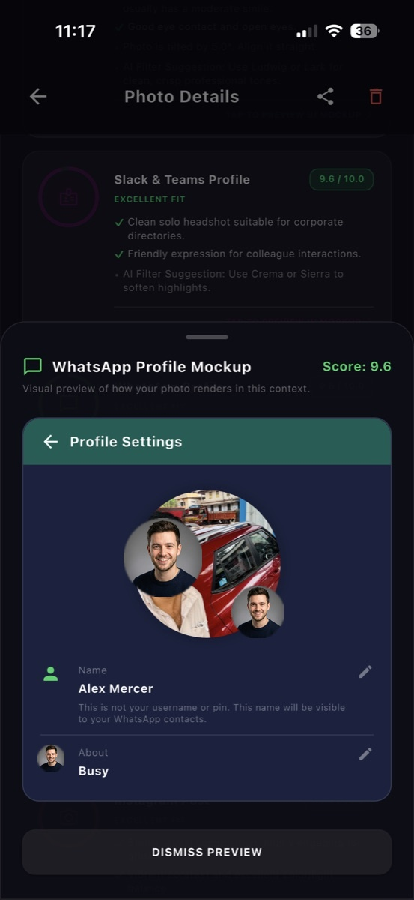
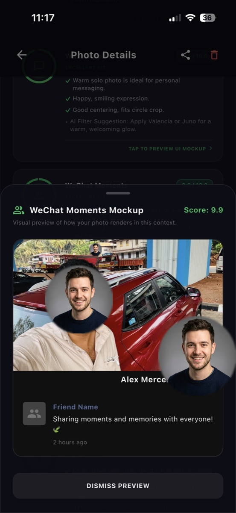
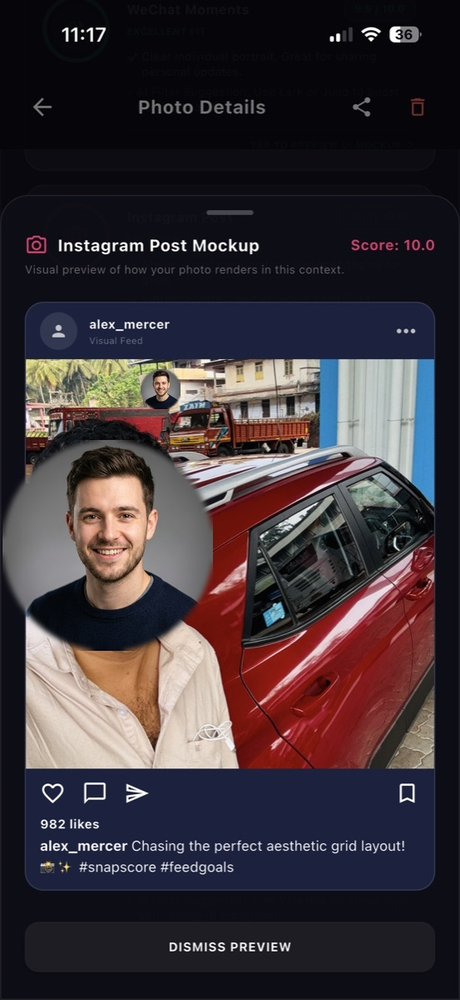
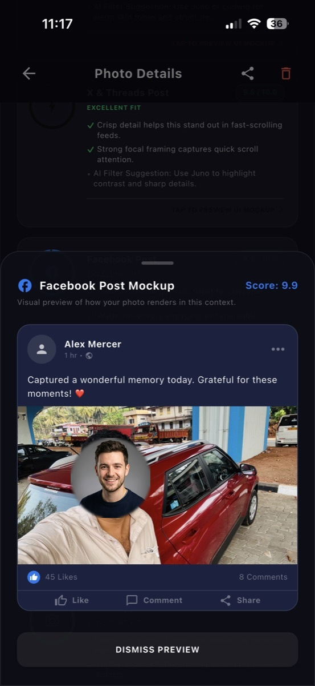
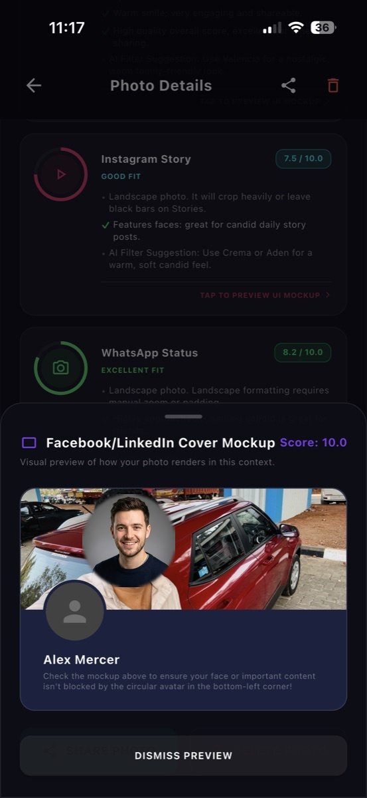
SnapScore is built for the sensitive reality of photos: faces, homes, artwork, personal documents, and memories. The product promise is simple: analyze locally, explain clearly, and keep the user in control.
Leveraging high-performance local compilation and native platform libraries to deliver fast analysis without cloud costs.
Guarantees smooth 60fps scrolling and a beautifully unified UI layout across Android and iOS platforms.
Runs Laplacian edge-definition calculations, Canny contours, and value-shading matrices on raw byte buffers in milliseconds.
Extracts face coordinates, smile indicators, and facial rotation metrics locally with zero network queries.
Provides a lightning-fast key-value document store for historical analysis snapshots, loaded completely offline.
Interactive Social Crop Previews
SnapScore previews crop regions, overlap blocks, and readability constraints in simulated platform components. Click a platform below to test the mockup view.
LinkedIn Profile
Checks circular crops and details overlaps.
Instagram Post
Standard square grid layout feed details.
Slack Avatar
Checks readability at tiny 40x40 scale.
Widescreen Cover
Shows horizontal banner safe crop margins.
Alex Morgan
Product Designer & Developer
San Francisco Bay Area
Open to Workalex_designs
alex_designs Exploring composition layouts on SnapScore. Rates high in framing! #design #uiux
Alex Morgan
Profile banner overlap layout verification